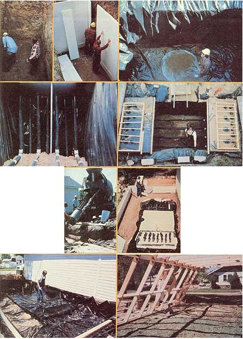
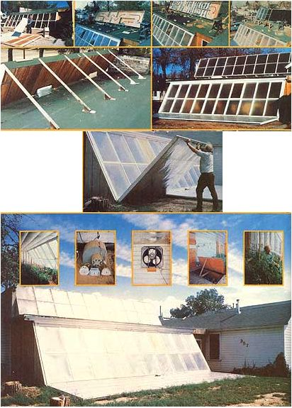
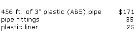

Joseph Orr's Fabulous "Mud Heat-Storage" Solar Greenhouse
By the Mother Earth News editors
May/June 1978
Here's a low-cost ($5.00 per square foot) solar greenhouse that not only heats itself, but provides a good deal of the space heat for an adjoining 28' X 40' building .. and keeps a Laramie, Wyo., family in fresh vegetables year round besides!
Here in Laramie-high on the steppes of Wyoming, in America's own Outer Mongolia-we have a very short growing season," Joseph Orr explains. "Some folks say it's sixty days long. I think they're wrong. Last year it was only ten or twenty days. In any case, my wife and I have tried to garden here for thirty years . . . with no success. We've always been hampered by such things as snowstorms in the middle of June . . . and July . . . and August . . . and September.
"At last, though, we've achieved gardening success! Our annual growing season now runs a full 365 days. . . thanks to the solar greenhouse that my daughters, son, and wife helped me build. Even with snow on the ground, we can raise beautiful crops of tomatoes, beans, squash, broccoli, spinach, turnips, peas, and corn. Our greenhouse has turned a 14' X 30' patch of Outer Mongolia into a 14' X 30' patch of Florida!"
If Joseph Orr sounds like a happy man, he is . . . for two reasons. Not only has he [1] solved the vexing problem of how to grow vegetables year round in frigid Laramie, Wyoming (elevation: 7,165 feet) . . . but he's [2] pioneered a whole new concept in underground heat storage (one that any would-be solar heating system builder would do well to look into).
The concept that Orr (aided by his two daughters, one son, and wife Amelia) has pioneered is called wet-dirt storage (also dubbed the Solterra system by Solar Energy Digest editor William Edmondson) . . . and it's what allows the Orr greenhouse to derive not 70%, not 80%, but 100% of its total heating needs from Ole Sol.
A NEW WAY OF STORING HEAT: MUD
Three years ago-when Joe Orr began to sketch out the design of his 420-square-foot solar conservatory-almost no information existed on the feasibility of using wet earth as a heat-storage medium . . . and no one (to Joe's knowledge) had actually built a solar heating system around a wet-dirt-type storage setup. (At that time-as now-most "active" solar heating installations employed large quantities of either water or rocks for heat storage.)
That, however, didn't keep Joe Orr from [1] digging a 9'-deep by 6-1/2'-wide by 15'-long trench where the solar conservatory was to be built, [2] lining the hole with plastic (and 3" of polystyrene insulation), [3] laying a series of "heat exchange" pipes in the excavated area, and [4] filling the pit with 878 cubic feet of water-saturated earth.
Nor did it keep Joe-when the time came-from covering the mud-storage bin with 6" of polystyrene and two feet of garden soil, constructing a 14' X 30' greenhouse over the bin, putting a 6' X 30' airhandling solar collector above the conservatory, and running air ducts between the collector and the mud bin's "heat exchange" pipes.
In other words, the lack of "it's been done before" information on mud-storage solar heating systems didn't keep Joseph Orr and family from building what now appears to be the only such system in existence!
But why? Why wet dirt instead of the more traditional water or rock storage? Joe cites three reasons: "First, because dirt is handy . . . it's already on the building site. Second, wet earth has surprisingly good heat-holding characteristics. (It has a capacity of 30 to 44 Btu's per cubic-foot-degree, versus about 20 for rocks and 62 for water.)
"What really convinced me to go the mud route, though," says Joe, "is its low cost compared to other storage mediums. On a cost-per-Btu-of-storage-capacity basis, you just can't beat mud for heat storage." Mr. Orr figures the cost breakdown for different systems of equivalent heatstorage capacity to be something like this:
WET DIRT
WATER
ROCK
To sum up: Wet dirt is inexpensive (dirt cheap, you might say). It's handy. It holds heat well. It's abundant. And now-thanks to the Orrs-it's also proven!
HOW THE ORR SYSTEM WORKS
To look at Joseph Orr's 420-square-foot glasshouse from a distance, you"d think it was "just another lean-to greenhouse". And in fact, certain aspects of the design are highly conventional. For instance, the conservatory (which is built onto the south side of a 28' X 40' workshop building) utilizes standard wood-frame construction. And its layout is entirely in line with state-of-the-art design principles. Unlike other "attached" greenhouses, however, Joe Orr's mudstorage unit is both actively and passively solar heated and can operate in any one of at least four different modes.
In the first mode, the greenhouse is warmed solely by the direct entry of solar radiation through the single-glazed (with Tedlar-coated Filon fiberglass) south wall. Thanks to the fiberglass glazing's heat-trapping properties-and to the use of up to 13" of fiberglass insulation in the conservatory's ceiling and walls-this mode alone suffices to keep the grow room's interior at or above its minimum design temperature of 58 °F on all but the cloudiest days.
Mode two comes into play whenever Ole Sol shines down on the greenhouse through a cloudless, fogless sky. Under such "clear air" conditions, the conservatory can quickly accumulate more warmth than the plants inside need . . . or can tolerate. For this reason, Joseph Orr installed a thermostat that-at 75°F or above-activates a wall-mounted fan which can-in turn-suck hot air out of the greenhouse and push it into the adjoining workshop. (This part of the system serves as the workshop's only source of heat . . . which-of course-means that on sunless days the shop stays cold. "We simply don't use the shop on those days," Joe Orr reports. "Instead, we find something else to do . . . such as work in the greenhouse.")
Mode three-the active collection (and storing) of Ole Sol's energy-is in operation whenever the sun shines on the system's 6' X 30' solar collector. As the collector's temperature passes the 100 °F mark, a thermostat-triggered fan begins to blow hot air through ductwork leading to the underground storage bin. There, a distribution manifold routes the heated air through 21 runs of mud-submerged plastic pipe, then to a second manifold that returns the air to the roof for another warm-up. (In the process, 878 cubic feet of wet earth in the storage bin becomes warmed to 90 °F or more.)
At night or in cold weather-or any other time that the temperature inside the conservatory begins to dip below 58 °F-still another thermostat kicks on yet another fan . . . this time, a blower that routes cold greenhouse air through the 21 mud-submerged"heat exchange" pipes and back into the nursery as warm air. Also, at night, Joseph and Amelia Orr place large, insulated "shutters" over the conservatory's main (south) wall, to trap heat inside the structure. (Note: These same shutters-laid flat in front of the greenhouse-serve as reflectors during the day to bounce more solar radiation into the grow room.) In this way (mode four), the greenhouse is kept at or above tomato-growing temperature at all times.
100%-SOLAR-HEATED
How well does the Orr system perform? So far-in three years of operation (including two particularly severe winters)-the temperature in the greenhouse has never fallen below 58° F . . . there's always been enough "reserve heat" in mud storage to keep the little conservatory warm night and day. In other words, the "mud storage" solar heating system actually provides 100% of the greenhouse's heating needs.
And it does more! Not only will the system meet the total space-heating demands of the greenhouse itself . . . it also heats (on a part-time basis) the former grocery store that now serves as the Orr family's workshop (see "mode two" above). In effect, then, the Orr conservatory is 100% solar-heated and then some!
Nonetheless, Joe Orr had originally hoped for more. "We didn't insulate the bottom of our wet-earth storage bin," Joe points out. "We figured that-since the bottom is only 17% of the bin's total surface area-heat losses there would be insignificant. We were wrong. Although air from the solar collector has topped 150 °F, the bottom of the storage bin has never gotten warmer than 90° F, and just slightly over 100 °F midway up the bin. So we've only got 20 to 25% of our intended storage capacity. We wish now that we'd added six inches of insulation to the bottom of the mud pit and three more inches around the sides, minimum."
Despite the fact that Joe had hoped for more heating capacity (his original plan was to convert the workshop area into an apartment that would get 100% of its space heat from the greenhouse), he still takes a great deal of pride in having achieved "100%-and-then-some" solar heating of his greenhouse. And rightly so . . . because many-if not most -"active" solar heating installations being built today end up costing their owners moremoney than the Orrs spent on their entire greenhouse setup (about $2,000) while performing lessefficiently. (Darn few solar installations even aspire to 100%plus efficiency!)
"We know it is an axiom of the solar economists that total solar heating is not yet economically prudent," Joseph Orr explains. "Our system-however-is actual, tangible proof that the solar economists are wrong!"
BEYOND WET DIRT
When pioneers get to blazing trails, they seldom stop at the first frontier. And so it is with Joe and Amelia Orr. Having demonstrated the feasibility of wet-dirt heat storage, Joe and his wife decided last winter to see if they could simplify their system one step further . . . by removing the water from their 878-cubic-foot underground mud supply.
For a good part of the past winter, the Orrs have been letting the mud in their heat-storage bin dry out while-at the same time-carefully monitoring the performance of the greenhouse solar heating system to see what (if any) changes would take place. The results, thus far, have been encouraging: It seems that heat stored in dry dirt is-if anything-more stable and easier to contain than heat stored in mud. "When the earth was wet," Joe recalls, "its temperature routinely dropped two or three degrees each night. Dry, it drops a mere half a degree per night. So we're seeing less heat loss now."
In theory-Joe points out-some loss in conductivity and heat capacity should occur as the dirt dries out . . . but so far, such changes (if they've occurred) have not affected the performance of the solar heating installation. In fact, the Orrs' greenhouse seems to be performing as well now as it ever has. (Even so, Joe and Amelia are already planning the construction of another greenhouse . . . one that-they say-might rely on a wet-dirt-filled wall for heat storage, or perhaps something even more exotic.)
Regardless of what the Orrs try next, one thing remains certain: Joe and his wife are now firm believers in solar greenhouses. Joe sums it up this way: "Our greenhouse has brought a new joy to winter, a new kind of warmth to our lives . . . the humid, hugging warmth of the sun. We've lived with this `new warmth' now for three winters. We'll never live without it again."
|
 TOP ROW: It all started with a 9'-deep by 6-1/2'-wide by 15'-long hole in the ground . . . which was then lined with 3"" of polystyrene insulation .., and covered with waterproof black plastic. SECOND ROW: Joseph Orr and his son Jason next put alternating layers of dirt (each of which was soaked thoroughly with water after it was shoveled into place) and loops of 3""heat exchanger plastic pipe into the excavation . . . and framed in the inlet/outlet ends (and the ends only) of the plastic loops with temporary forms so that concrete could be poured around them. LEFT: A 6"" X 10"" continuous concrete footing was also poured in place around the base of the Orrs' greenhouse . . . and, once a low cement-block wall had been laid on that footing, another 3"" of polystyrene insulation (the same as in the pit) was placed against the inside of the block wall. BELOW: After insulating the top of the hotmud bin with 6"" of foam insulation, more black plastic was then laid down to cover and isolate the area inside the low foundation . . . anal enough topsoil, horse manure, and compost were hauled in to fill the interior of the greenhouse level full to the top of the foundation wall. Construction of the actual greenhouse was then begun over this efficient heat storage bin. |
 TOP ROW: Joseph Orr?happy cuss that he is?even had fun building the let-down insulating doors/solar reflectors for his greenhouse . . . the next three photos show steps taken during construction of roof-mounted 6' X 30' supplemental solar collector. SECOND ROW: Back side of completed rooftop solar collector . . . and the finished greenhouse from the front with. its reflector doors down. RIGHT: Mr. Orr uses the ""armstrong"" method of raising and lowering the insulating reflectors. BELOW: Another view of the greenhouse in action, soaking up the sun. INSET, LEFT TO RIGHT: Interior of the working greenhouse . . . two shots of some of the simple timers and fans that control various modes of the Orr system . . . although it does not have to be raised during any mode of the greenhouse's operation, this plywood door can be lifted for easy access to the heat exchanger pipes built into the floor of the building . . . and a laughing Joseph Orr explains the efficiency of his ""better than 100% solar-heated""conservatory. |
 |
|
|
 |
|